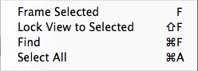

Scene View navigation
The Scene View has a set of navigation controls to help you move around quickly and efficiently.
Scene Gizmo
The Scene Gizmo is in the upper-right corner of the Scene View. This displays the Scene View Camera’s current orientation, and allows you to quickly modify the viewing angle and projection mode.
The Scene Gizmo has a conical arm on each side of the cube. The arms at the forefront are labelled X, Y and Z. Click on any of the conical axis arms to snap the Scene View Camera to the axis it represents (for example: top view, left view and front view). You can also right-click the cube to bring up a menu with a list of viewing angles. To return to the default viewing angle, right-click the Scene Gizmo and click Free.
You can also toggle Perspective on and off. This changes the projection mode of the Scene View between Perspective and Orthographic (sometimes called ‘isometric’). To do this, click the cube in the centre of the Scene Gizmo, or the text below it. Orthographic view has no perspective, and is useful in combination with clicking one of the conical axis arms to get a front, top or side elevation.

(Scene above from BITGEM)
If your Scene View is in an awkward viewpoint (upside-down, or just an angle you find confusing), Shift-click the cube at the centre of the Scene Gizmo to get back to a Perspective view with an angle that is looking at the Scene from the side and slightly from above.
Click on the padlock on the top right of the Scene Gizmo to enable or disable rotation of the Scene. Once Scene rotation is disabled, right-clicking the mouse pans the view instead of rotating it. This is the same as the Hand tool (see Hand tool, below).
Note that in 2D Mode the Scene Gizmo is not displayed, because the only option is to have the view looking perpendicularly at the XY plane.
Scene Gizmo: Mac trackpad gestures
On a Mac with a trackpad, you can drag with two fingers to zoom the view.
You can also use three fingers to simulate the effect of clicking the arms of the Scene Gizmo: drag up, left, right or down to snap the Scene View Camera to the corresponding direction. In OS X 10.7 "Lion" you may have to change your trackpad settings in order to enable this feature:
- Open System Preferences and then Trackpad (or type trackpad into Spotlight).
- Click into the "More Gestures" option.
- Click the first option labelled "Swipe between pages" and then either set it to "Swipe left or right with three fingers" or "Swipe with two or three fingers".
Moving, orbiting and zooming in the Scene View
Moving, orbiting and zooming are key operations in Scene View navigation. Unity provides several ways to perform them for maximum accessibility:
Arrow movement
You can use the Arrow Keys to move around the Scene as though "walking" through it. The up and down arrows move the Camera forward and backward in the direction it is facing. The left and right arrows pan the view sideways. Hold down the Shift key with an arrow to move faster.
The Hand tool
When the Hand tool is selected (shortcut: Q), the following mouse controls are available:
Move: Click-drag to drag the Camera around.
 Orbit: Hold Alt, and left-click and drag to orbit the Camera around the current pivot point. This option is not available in 2D mode, because the view is orthographic.
Orbit: Hold Alt, and left-click and drag to orbit the Camera around the current pivot point. This option is not available in 2D mode, because the view is orthographic.
 Zoom: Hold Alt, and right-click and drag to zoom the Scene View. On Mac you can also hold Control, and left-click and drag instead.
Zoom: Hold Alt, and right-click and drag to zoom the Scene View. On Mac you can also hold Control, and left-click and drag instead.
Hold down Shift to increase the rate of movement and zooming.
Flythrough mode
Use Flythrough mode to navigate the Scene View by flying around in first-person, similar to how you would navigate in many games.
- Click and hold the right mouse button.
- Move the view around using the mouse, the WASD keys to move left/right/forward/backward, and the Q and E keys to move up and down.
- Hold down Shift to move faster.
Flythrough mode is designed for Perspective Mode. In Orthographic Mode, holding down the right mouse button and moving the mouse orbits the Camera instead.
Note that Flythrough mode is not available in 2D mode. Instead, holding the right mouse button down while moving the mouse pans around the Scene View.
Movement shortcuts
For extra efficiency, all of these controls can also be used regardless of which transform tool is selected. The most convenient controls depend on which mouse or track-pad you are using:
| Action | 3-button mouse | 2-button mouse or track-pad | Mac with only one mouse button or track-pad |
|---|---|---|---|
| Move | Hold Alt+middle mouse button, then drag | Hold Alt+Control+left-click, then drag | Hold Alt+Command+left-click, then drag |
| Orbit (Not available in 2D mode) | Hold Alt+left-click, then drag | Hold Alt+left-click, then drag | Hold Alt+left-click, then drag |
| Zoom | Use the scroll wheel, or hold Alt+right-click, then drag | Hold Alt+right-click, then drag | Use the two-finger swipe method to scroll in and out, or hold Alt-Control+left-click, then drag |
Centering the view on a GameObject
To center the Scene View on a GameObject, select the GameObject in the Hierarchy, then move the mouse over the Scene View and press F. This feature can also be found in the menu bar under Edit > Frame Selected. To lock the view to the GameObject even when the GameObject is moving, press Shift+F. This feature can also be found in the menu bar under Edit > Lock View to Selected.
